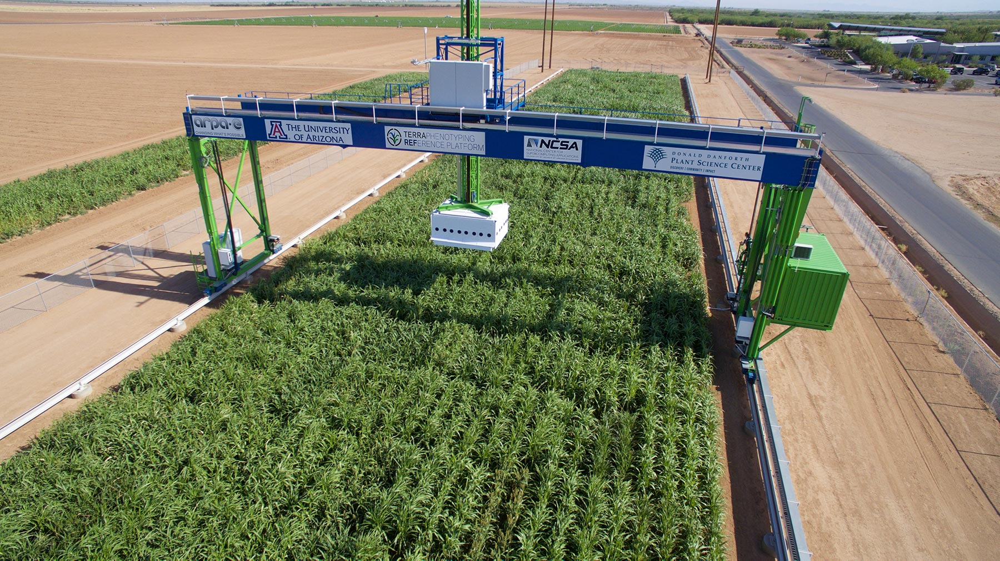

An image of the TERRA-REF fields in Arizona, where the Sorghum-100 dataset was generated
This deep learning model and accompanying paper was the result of term project for a Deep Learning class, with students choosing a competition and accompanying dataset from workshops at the CVPR 2022/2023 conference as the basis for their projects. I chose a competition from the Fine-Grained Visual Categorization (FGVC) workshop, which examined the Sorghum-100 dataset and had an accompanying Kaggle competition.
The dataset comprises 100 cultivars (classes) of sorghum, a drought-resistant grain. The small inter-class variance and environmental factors affecting image quality made it a challenging multiple-class categorization problem. A detailed analysis of the dataset was performed, and a more manageable sub-dataset was derived to accommodate the time and computational constraints of the project. All images in the dataset were pre-processed with CLAHE (contrast-limited adaptive histogram equalization) to improve contrast and alleviate the obstruction of plant features from the effects of ambient lighting conditions.
I developed a model using Python and the Keras library for Tensorflow, employing the classic LeNet design to serve as a baseline of performance against much more sophisticated CNNs developed by teams in the challenge’s Kaggle competition. Experiments were conducted with varied hyperparameters, as well as another experiment with ablation of the model’s image augmentation, to illustrate how each affected the model’s performance during training and validation. The results and analyis of these experiments were authored in a technical report, linked above. The workshop and Kaggle competition are linked below.